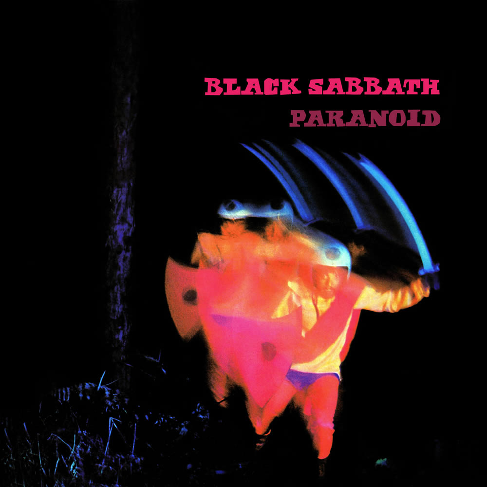

A Review of
Paranoid by Black Sabbath

In Birmingham, England in 1968, Ozzy Osbourne, Tony Iommi, Geezer Butler, and Bill Ward would form what would become one of the most influential bands in the history of rock and roll, as they were pioneers for the genre of heavy metal. In 1970, they would release their most prolific album, Paranoid.
The album begins with the longest song on the LP, “War Pigs/Luke’s Wall”. It’s an anti-war song about those who are in charge of the world, sending out people to fight, and are soon about to get their “comeuppance”.
I really enjoyed this song. Ozzy’s lyrics are wonderfully sung, Tony kills it on the guitar, and Geezer is doing the same on the bass. However, what stands out the most to me on this song, is Bill Ward’s drumming, especially right after the final verse, where he goes absolutely insane. I feel I don’t hear about him enough in terms of him being a drummer. He’s got to be one of the best I’ve ever heard.
The second song on the album is by far the most popular song, not just on this particular album, but in Black Sabbath’s entire discography.
It is the album’s title track, “Paranoid”. The song is only a little over 2 minutes long, but it’s just as amazing as the last song, if not better. Tony Iommi’s work on this song just brings the entire track together, and it’s definitely worth the status of being Black Sabbath’s most popular song.
The next song, “Planet Caravan”, brings a shift in tone to the album. As we go from a head banging anthem, to a more mellowed out track that seems straight out of the psychedelic era of rock and roll, especially when you hear the distortion in Ozzy’s voice.
I also couldn’t really tell you what it’s about either since the lyrics are incredibly metaphorical. It’s quite different from what I would expect from a heavy metal album, but it’s not bad.
I do love the grooviness of the bass in this song. Geezer Butler did a great job on this one. Bill Ward is also playing congas on this track as well, which goes so well with the bass.
The fourth track on this album is “Iron Man”. I can go ahead and tell you this song is possibly my favorite. The riff from Tony, the great vocal work from Ozzy, and Bill once again killing it on the drums, makes this song so good. The transition halfway through, where the song picks up speed, and Tony does his solo is just too good.
Next on the album is “Electric Funeral”. The song starts out quite slow, not as slow as Planet Caravan, but still. It does, however, pick up in the middle, but slow down once again.
This isn’t one of Black Sabbath’s most popular songs, but I do enjoy it. I would say it’s mainly because of Tony Iommi’s guitar work in this track.
The sixth song on this album is “Hand of Doom”. Just like “War Pigs”, this song is also over 7 minutes long. Also, just like “Electric Funeral”, the song starts out slow and picks up in the middle, to eventually slow down once again. Not much to say about this song. I do like it, but it’s kind of a repeat of the last one.
The next and also shortest song on the album is “Rat Salad”. Once again, the best thing about this song is Bill Ward’s drumming. In the middle of the song, he just goes on a 30 second rampage and I love every second of it. It’s the best part of the song and more proof of why he should be more recognized for his talents.
The album closes out with a 6 minute piece titled, “Jack the Stripper/Fairies Wear Boots”. While I do like this song, if I had to say which one was my least favorite, it would be this one.
It’s not a bad song, I just don’t think it’s the best song on the album. I feel kind of meh about it. Since the last 7 songs were either really good or really amazing, I might just feel this way because the song had some big shoes to fill.
Overall, I would definitely say that this album is definitely worth its hype. There’s not a bad song on the album, and the best songs are really good.
Resume
Biography